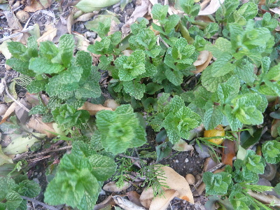
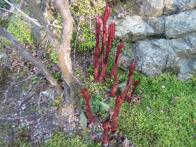
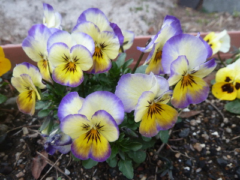
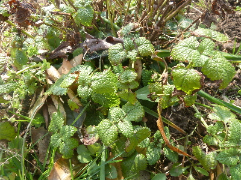
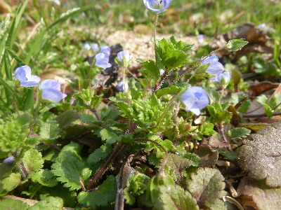

遊びで植物を育てよう
2018/03/25
ミントあるけど何に使おうかな。
ミントがあるけど、まだ清涼感が欲しい時季じゃないな。

ドライにして夏まで保存してもいいけど、ドライミントはあまり使わないかも。
しばらくは放置かな。
【3月TOP】
【日記TOP】
【園芸TOP】
2018/03/25
地面から赤いものがニョキニョキ出ると気持ち悪い。
シャクヤクの芽が出てるんですが、赤いのがなんか気持ち悪い。

芽がもっと細いと気にならないんだろうな。
なんとなく地面から赤い手が生えてるように見える。
【3月TOP】
【日記TOP】
【園芸TOP】
2018/03/18
パンジーが綺麗に咲いてます。
暖かくなって植物の勢いがいいですね。

綺麗に開いてます。
もうちょっと大きくなるといいかな。
【3月TOP】
【日記TOP】
【園芸TOP】
2018/03/11
レモンバームが冬を越しました。
レモンバームって冬越せるんですね。

一回買ったらずーっと育てれるのかな。
なんかお得な植物ですね。
【3月TOP】
【日記TOP】
【園芸TOP】
2018/03/11
小さな花が咲いていました。
雑草ですが、綺麗ですね。

でもここは畑なので抜いてしまいました。
【3月TOP】
【日記TOP】
【園芸TOP】
過去の日記
【2024年4月の日記】
【2023年3月の日記】
【2022年3月の日記】
【2021年3月の日記】
【2020年3月の日記】
【2019年3月の日記】
【2018年3月の日記】
【2017年3月の日記】
【2016年3月の日記】
【2015年3月の日記】
【2014年3月の日記】
【2013年3月の日記】
【3月TOP】
【日記TOP】
【園芸TOP】
畑仕事じゃないよ。
【おいしいものを食べよう。】【たくさん寝よう。】
【ソロ活をしよう!】【季節感のあることをしよう。】【動画視聴はほどほどに。】【当サイトの全てのコンテンツは無断転載禁止です。】